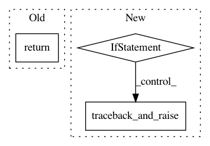

6cc7068ca0e216d5160955dec32694c5ec0be5d6,src/syft/lib/python/slice.py,Slice,getindices,#Slice#Any#Any#Any#Any#,81
Before Change
step = 1
else:
if not isinstance(step, int):
return -1
else:
step = step
if start is None:
start = length - 1 if step < 0 else 0
After Change
traceback_and_raise(
TypeError("no attributes should be more than maximum length")
)
if step == 0:
traceback_and_raise(
TypeError("no attributes should be more than maximum length")
)
res = super().getindices(length, start, stop, step)
return PrimitiveFactory.generate_primitive(value=res)
def unpack(self, start: Any, stop: Any, step: Any) -> SyPrimitiveRet:
In pattern: SUPERPATTERN
Frequency: 3
Non-data size: 3
Instances
Project Name: OpenMined/PySyft
Commit Name: 6cc7068ca0e216d5160955dec32694c5ec0be5d6
Time: 2021-03-03
Author: dashnabanita@gmail.com
File Name: src/syft/lib/python/slice.py
Class Name: Slice
Method Name: getindices
Project Name: OpenMined/PySyft
Commit Name: 79a0ad30370338b1bebae9d3fdd8e7d0774c602b
Time: 2021-03-25
Author: me@madhavajay.com
File Name: src/syft/federated/fl_job.py
Class Name: FLJob
Method Name: report
Project Name: OpenMined/PySyft
Commit Name: 86b747a5b433c5e72f2dce612ba08132aa9f6c2d
Time: 2021-03-23
Author: xvtongye1986@163.com
File Name: src/syft/lib/python/collections/ordered_dict.py
Class Name: OrderedDict
Method Name: values